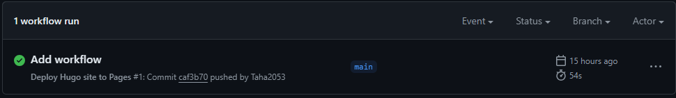

How to make a static website using Hugo
In this artictle I’ll explain in a simple and fast way how to create a website using Hugo and the themes available with it, how to choose the theme, apply it and modify it, and finally how to build and deploy your webste using Github pages.
But for curious learners here is the full Hugo documentaion for a deep dive into all the details.
Website Creation
Installation
This section will explain the installtion process for Windows and MacOS users specefically.
- Install Git and an Editor ( example : VScode )
- Install Hugo :
For Windows users :
Chocolatey :
Scoop :choco install hugo-extended
PowerShell :scoop install hugo-extended
For MacOS users :winget install Hugo.Hugo.Extended
Hombrew:
MacPorts:brew install hugosudo port install hugo
Creation :
- Open Git Bash
- Check Hugo version ( v0.112.0 or later)
hugo version - Create your website
hugo new site WEBSITENAME - Use
cdto go to the dedicated directory, in this case your website folder:Usecd WEBSITENAMEcd ../to go back in path - Initialize an empty Git repository in the current directory:
git init
Theme :
Choose a theme from here. Every theme has it’s own documentation, it’s highly recommended to read it from the Github repository or the Demo website if available. Some themes may use Node.js or Go, so you will have to download them before using that specific theme.
There are several ways to use a theme, you can either download it, clone it, use it as a module or as a submodule. Here, I will explain the simple and direct method which is importing it as a submodule.
- Into git Bash :
THEMENAME is ananke in this example.
git submodule add https://github.com/theNewDynamic/gohugo-theme-ananke.git themes/ananke - Append this line to the website configuration file, in this case
hugo.toml( can beconfig.tomlorconfig.yaml, depends on the theme used) indicating the current theme:You can also open the file using your editor and add it.echo "theme = 'THEMENAME'" >> hugo.toml - Build your website using :
hugo - You can start a local host to check how your website is so far:
and copy paste the link:
hugo serverhttp://localhost:1313into your browser.
You can usehugo server -Dto test draft versions.
To stop the local host use CTRL + C
Content Adding:
-
With your editor, open the configuration file (
hugo.tomlin this case) in the root of your project.should look like this :baseURL = 'https://example.org/' languageCode = 'en-us' title = 'My New Hugo Site' theme = 'THEMENAME'change the baseURL to your choice, ending with
.github.io/and change the title to your choice. -
Add a new page to your site:
hugo new content content/posts/my-first-post.mdcontent/posts/my-first-post.mdis a path with the post namemy-first-post.md, this can be changed . -
Hugo created the file in the
content/postsdirectory in this case. Open the file with your editor to modify it.
by default the content will be like this :+++ title = 'My First Post' date = 2024-01-14T07:07:07+01:00 draft = true +++the draft value is set to truebecause hugo does not publish draft content by default, to change that we can set the value to false, you can only see the draft version by using
hugo server -D
hugo follows Markdown method (check link for cheat sheet) , you can play with this as you want inside the editor to modify the file (post).
Building, Hosting and Deploying using Github Pages:
There are several ways to host and deploy your website, in this article I will only mention the Github pages method, but the other methods work perfectly too, you can check them in the documentaion
-
Create a GitHub account if you don’t have one, then make a public repository.
-
Into the repository, go: Settings >Actions > General > Workflow permissions > Read and write permissions, and Enable
-
Go settings > Pages >Build and deployement > Source : Change it to Github actions
-
Now from the code section in the Github repository, copy paste the code under this form into the Git Bash:
git remote add origin https://github.com/YOURGITHUBUSERNAME/REPOSITORYNAME.git git branch -M main git push -u origin main -
Now inside the website main directory (the root), you will add new directories :
This will basically add inside the website folder , a new “.github” folder and inside it “workflows” folder.:mkdir -p .github/workflows -
Now we will add the YAML file inside the “workflows” folder:
touch .github/workflows/hugo.yamlThen, copy paste into the
hugo.yamlfile, using you editor (Change the branch name and Hugo version as needed ):# Sample workflow for building and deploying a Hugo site to GitHub Pages name: Deploy Hugo site to Pages on: # Runs on pushes targeting the default branch push: branches: - main # Allows you to run this workflow manually from the Actions tab workflow_dispatch: # Sets permissions of the GITHUB_TOKEN to allow deployment to GitHub Pages permissions: contents: read pages: write id-token: write # Allow only one concurrent deployment, skipping runs queued between the run in-progress and latest queued. # However, do NOT cancel in-progress runs as we want to allow these production deployments to complete. concurrency: group: "pages" cancel-in-progress: false # Default to bash defaults: run: shell: bash jobs: # Build job build: runs-on: ubuntu-latest env: HUGO_VERSION: 0.127.0 steps: - name: Install Hugo CLI run: | wget -O ${{ runner.temp }}/hugo.deb https://github.com/gohugoio/hugo/releases/download/v${HUGO_VERSION}/hugo_extended_${HUGO_VERSION}_linux-amd64.deb \ && sudo dpkg -i ${{ runner.temp }}/hugo.deb - name: Install Dart Sass run: sudo snap install dart-sass - name: Checkout uses: actions/checkout@v4 with: submodules: recursive fetch-depth: 0 - name: Setup Pages id: pages uses: actions/configure-pages@v4 - name: Install Node.js dependencies run: "[[ -f package-lock.json || -f npm-shrinkwrap.json ]] && npm ci || true" - name: Build with Hugo env: # For maximum backward compatibility with Hugo modules HUGO_ENVIRONMENT: production HUGO_ENV: production TZ: America/Los_Angeles run: | hugo \ --gc \ --minify \ --baseURL "${{ steps.pages.outputs.base_url }}/" - name: Upload artifact uses: actions/upload-pages-artifact@v3 with: path: ./public # Deployment job deploy: environment: name: github-pages url: ${{ steps.deployment.outputs.page_url }} runs-on: ubuntu-latest needs: build steps: - name: Deploy to GitHub Pages id: deployment uses: actions/deploy-pages@v4 -
Now to save all this we need :
git add . git commit -m "Add workflow"This step is done after every change to the Blog (Every edit or content added)
You can name the changes as you want, in this case it’s caledAdd workflowThen Push all these changes to Github we use :
git push -u origin main -
Now on the Github repository, go to Actions and you will see a new workflow with a yellow circle, let it build untill it is green : 
after that click on it and you will find the build and deploy, under the deploy you will find your website URL :
 Test case
That means your website has been successfully deployed.
Test case
That means your website has been successfully deployed.